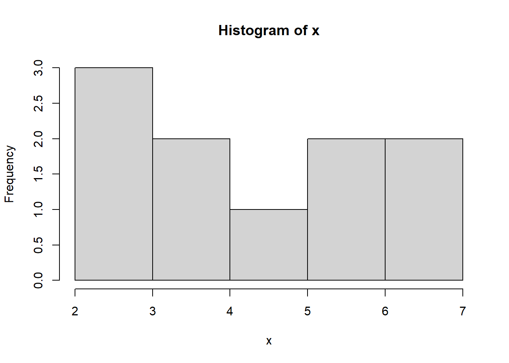
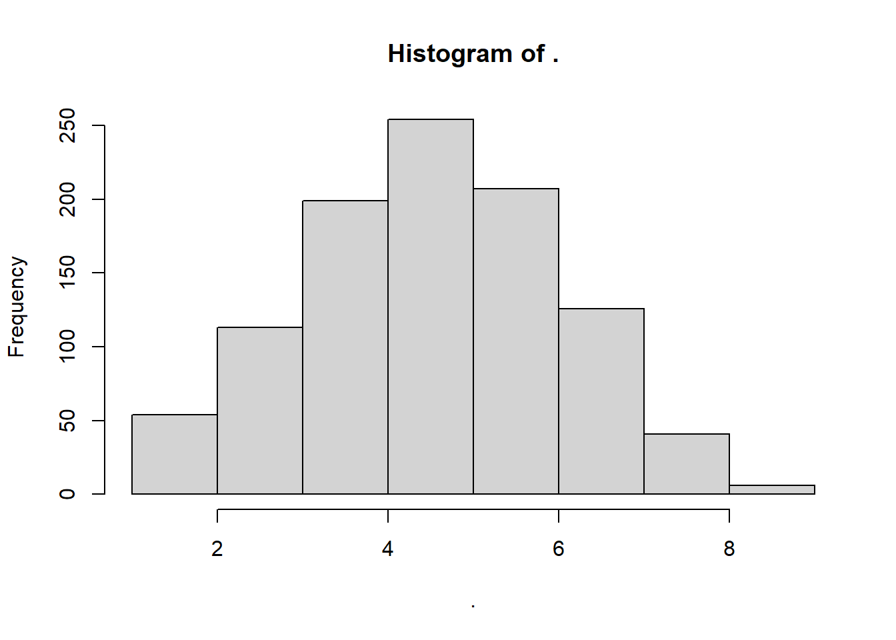

Chapter 2 Dasar-dasar R
Mari kita mulai terlebih dahulu dengan dasar-dasar R. Jika anda sudah memiliki pengalaman dengan R, anda mungkin dapat melewati bagian ini. Saya sangat menyarankan anda untuk bekerja dengan RStudio Integrated Development Environment (IDE). Pastikan juga anda mengerti dua jenis file R:
- File
RteksASCIIyang hanya berisi skrip R. - File teks
RmddanASCII. Jika dibuka di RStudio dapat dijalankan sebagai R-Notebook atau dikompilasi menggunakan knitr, bookdown, dll.
2.1 Operator Penugasan
Di sini saya merekapitulasi beberapa operator penugasan yang perlu anda ketahui agar anda terbiasa dengan kode R:
<-dikenal sebagai operator penugasan. Artinya, “Buat nama objek di sebelah kiri sama dengan output dari koding di sebelah kanan”&Berarti AND, dalam logika Boolean|berarti OR, dalam logika Boolean.!berarti NOT, dalam logika Boolean.- Ketika merujuk pada nilai yang dimasukkan sebagai teks, atau tanggal, masukkanlah dengan tanda kutip, seperti ini: “Amerika Serikat”, atau “2016-07-26”. Angka tidak dikutip.
- Saat memasukkan dua atau lebih nilai sebagai daftar (list), gabungkanlah dengan menggunakan fungsi
c, dengan nilai yang dipisahkan oleh koma, misalnya:c ("2020-07-26", "2020-08-04"). - Seperti dalam spreadsheet, anda dapat menentukan rentang nilai dengan titik dua, misalnya:
c (1:10), fungsi ini menghasilkant daftar bilangan bulat dari satu hingga sepuluh.
Beberapa operator umum:
+ -tambah, kurang;- /
kali, bagi; *> <` lebih besar dari, kurang dari;
- /
>= < =lebih besar dari atau sama dengan, kurang dari atau sama dengan;! =tidak sama dengan.- Tanda sama dengan bisa sedikit membingungkan, tetapi lihat bagaimana mereka digunakan dalam kode yang kita gunakan hari ini:
==menguji apakah suatu objek sama dengan nilai. Tanda Ini sering digunakan saat memfilter data;=membuat objek sama dengan nilai; bekerja seperti<-, tetapi digunakan di dalam tanda kurung dari sebuah fungsi.$untuk menentukan kolom individual dengan memisahkan nama frame data dan nama kolom. Catatan Objek dan nama variabel dalam R tidak boleh berisi spasi.
2.2 Kalkulator Sederhana Dalam R
| Contoh | Operator S | yntax di R |
|---|---|---|
| 5+5 | Tambah | + |
| 5-5 | Kurang | - |
| 5x5 | Kali | * |
| 5:5 | Bagi | / |
| 5^5 | Pangkat | ^ |
| √25 | Akar kuadrat | Sqrt |
| Log 5 | Logaritma | Log() |
| Exp 5 | Eksponensial | Exp() |
| (5/5)+5 | Tanda kurung | () |
2.2.1 Penugasan Variabel
Pertama, ada harus menetapkan nilai ke variabel di konsol R anda:
Kemudian, jalankan kode berikut di bawah ini baris demi baris untuk melihat hasilnya:
x + y # Tambah
x - y # Pengurangan
x * y # Perkalian
x / y # Pembagian
x ^ y # Pangkat
sqrt(x * y) # Akar kuadrat
log(x) # Logaritma
exp(y) # eksponensial
(x/y) + y # Tanda KurungAnda juga bisa melakukan perhitungan menggunakan nama variabel:
2.2.2 Probabilitas
R dapat digunakan sebagai kalkulator probabilitas. Anda mungkin berharap mengetahui ini ketika melakukan kelas Intro To Probability anda.
dbinom (x = 3, size = 10, prob = 0.5) # Fungsi Kepadatan (DF) P (X = 3)
dbinom (3, 10, 0.5) # hasil yang sama seperti di atas
pbinom (q = 3, size = 10, prob = 0.5) # Fungsi Distribusi Kumulatif
qbinom (p = 0.1718, size = 10, prob = 0.5) # kuantil untuk X ~ B (n = 10, p = 0.5)
rbinom (n = 10, size = 10, prob = 0.5) # menghasilkan variabel acak
#? distributions # Untuk informasi lebih lanjutR memiliki banyak distribusi bawaan. Nama mereka mungkin berubah, tetapi awalannya tetap tidak berubah, contoh:
dawalan untuk fungsi kerapatan (density function).pawalan untuk fungsi distribusi kumulatif (Cummulative distribution function/CDF).qawalan untuk fungsi kuantil (mis., CDF terbalik atau inverse CDF).rawalan untuk menghasilkan sampel acak.
Gunakanlah ide-ide dibawah ini dengan menggunakan beberapa distribusi CDF :
pbinom()untuk Binomial CDF.ppois()untuk Poisson CDF.pnorm()untuk Gaussian CDF.pexp()untuk Eksponensial CDF.
2.3 Bantuan
Salah satu bagian terpenting dari bekerja dengan bahasa adalah mengetahui di mana mencari bantuan. Selain berbagai sumber daya bantuan dalam ekosistem R, selain itu R juga memiliki beberapa fasilitas in-line. Dapatkanlah bantuan untuk fungsi tertentu.
Jika anda tidak tahu nama fungsi yang anda cari, carilah file bantuan lokal untuk string tertentu:
Atau muat menu agar anda dapat menavigasi bantuan lokal berbasis web:
2.4 Statistik Dasar
Mari kita terapkan beberapa output ke objek bernama “x”, lalu kita akan melihat beberapa statistik dasar:
x = rbinom (n = 10, size = 10, prob = 0.5) # berfungsi tetapi ini merupakan gaya yang buruk.
x <- rbinom (n = 10, size = 10, prob = 0.5) # cara terbaikCatatan: Jika Anda terbiasa dengan bahasa pemrograman lain, anda mungkin lebih menggunakan penugasan = daripada penugasan <-. Lihat panduan gaya Hadley untuk lebih lanjut.
x # cetak konten suatu objek cukup ketik namanya
print (x) # mencetak konten suatu objek secara implisit
(x <- rbinom (n = 10, size = 10, prob = 0.5)) # cara alternatif untuk menetapkan dan mencetak
mean (x) # Menghitung rata-rata
var (x) # Menghitung variansi
sd (x) # Simpangan baku
hist (x) # Plot histogram
R menyimpan setiap objek yang anda buat dalam RAM. Semua koleksi dari semua objek tersebut adalah ruang kerja yang dapat anda periksa dengan:
ls () # Koleksi semua objek tersebut
ls (pattern = 'x') # menggunakan ls dengan pola teks
rm (x) # Menghapus variabel
ls () # MemverifikasiAnda mungkin berpikir bahwa jika suatu objek dihapus maka memorinya akan dilepaskan. Ini hampir benar, tergantung pada mekanisme negosiasi antara R dan sistem operasi.
2.5 Nilai yang Hilang
Tidak seperti pemrograman yang biasa, ketika bekerja dengan data di kehidupan nyata, anda mungkin mempunyai nilai yang hilang: pengukuran yang tidak direkam/disimpan/dll. R memiliki mekanisme yang agak canggih untuk menangani nilai-nilai yang hilang. Ini membedakan antara jenis atau tipe berikut:
NA: Entri yang tidak tersedia (nilaiNAjuga memiliki kelas, jadi ada bilangan bulatNA, karakter NA, dll.)NaN: Bukan angka (Nilai NaN jugaNAtetapi sebaliknya tidak benar)
R mencoba mempertahankan analis dan mengembalikan kesalahan atau NA ketika keberadaan nilai yang hilang membuat perhitungan tidak valid:
missing.example <- c(10,11,12,NA) # Membuat vector dengan bilai yang hilang
is.na(missing.example) # Memeriksa nilai yang hilang
which(is.na(missing.example)) # Mengidentifikasi `NA` (hanya vector)
mean(missing.example) # Menghitung rata-rata dengan nilai yang hilangSebagian besar fungsi biasanya memiliki mekanisme internal untuk menghadapi hal ini. Dalam fungsi rata-rata, ada argumen na.rm yang memberi tahu R cara menghapus NA.
Temukan nilai yang hilang di kolom data frame
df <- data.frame( x1 = c(NA, 7, 8, 9, 3), # Variabel numerik dengan satu nilai hilang
x2 = c(4, 1, NA, NA, 4), # Variabel numerik dengan dua nilai hilang
x3 = c(1, 4, 2, 9, 6), # Variabel numerik tanpa nilai hilang
x4 = c("Hello", "I am Bakti",
NA, "I love R",NA)) # Variabel factor dengan
is.na(df) # Cara klasik untuk memeriksa `NA`
sum(is.na(df)) # Menghitung `NA`
apply(is.na(df),2, which) # Mengindeks `NA` (hanya df)
which(complete.cases(df)) # Mengidentifikasi nilai yang diamatiMekanisme yang lebih umum adalah menghapus ini secara manual:
2.6 Piping
Karena R berasal mewarisi banyak sumber, juga mengadopsi OS seperti Unix dan Linux. Piping adalah ide yang diambil dari Linux shell yang memungkinkan untuk menggunakan output dari satu ekspresi sebagai input ke yang lain. Dengan demikian, Piping membuat kode lebih mudah dibaca dan ditulis.
# Prasyarat:
library(magrittr) # Memuat fungsi piping
help(package = "magrittr") # Memuat informasi `magrittr`
x <- rbinom(n=1000, size=10, prob=0.5) # Menghasilkan beberapa sampel data
# Contoh:
x %>% var() # Bukan `var(x)`
x %>% hist() # Sebagai ganti `hist(x)`
Contoh berikutnya menunjukkan manfaat dari piping. Dua potongan kode selanjutnya melakukan hal yang sama. Coba uraikan dalam pikiran Anda:
# Gaya fungsional Onion style
car_data <-
transform(aggregate(. ~ cyl,
data = subset(mtcars, hp > 100),
FUN = function(x) round(mean(x, 2))),
kpl = mpg*0.4251)# Piping (magrittr) style
car_data <- mtcars %>%
subset(hp > 100) %>%
aggregate(. ~ cyl, data = ., FUN = . %>% mean %>% round(2)) %>%
transform(kpl = mpg %>% multiply_by(0.4251)) %>%
printTip: RStudio memiliki jalan pintas melalui keyboard untuk %>% operator. Coba Ctrl+Shift+m.
2.7 Membuat Vektor
Elemen paling dasar dalam R adalah vektor. Kita sekarang akan melihat cara membuat vector dan mengakses elemen-elemen (yaitu, subset). Berikut adalah tiga cara untuk membuat vektor yang sama:
c(10,11,12,13,14,15,16,17,18,19,20,21) # Membuat vektor secara manual
10:21 # Menggunakan operator `:`
seq(from=10, to=21, by=1) # fungsi `seq()` dengan "by"
seq(from=10, to=21, len=12) # fungsi `seq()` dengan "len"
x <- 10:21 # Mari kita tetapkan ke objek bernama "x"
x+2 # Operasi biasanya bekerja berdasarkan elemen
x*2 # Tambahkan 2 untuk setiap elemen `x`
x^2 # Pangkat 2 untuk setiap elemen `x`
sqrt(x) # Akar kuadrat untuk setiap elemen ‘x’
log(x) # Logaritma untuk setiap elemen 'x’
x <- c(0.5, 0.6) # Numerik
x <- c(TRUE, FALSE) # Logis
x <- c(T, F) # Logis
x <- c("a", "b", "c") # Karakter
x <- 9:29 # Integer
x <- c(1+0i, 2+4i) # Complex
x <- vector("numeric", length = 10) # fungsi `vector ()` untuk menginisialisasi vektor.
y <- c(1.7, "a") # Karakter
y <- c(TRUE, 2) # Numerik
y <- c("a", TRUE) # Numerik
typeof(y) # Untuk memeriksa jenis `y`
class(y) # Untuk memeriksa jenis `y`Catatan: Menurut dokumentasi R untuk typeof() dan class(), pernyataan tentang “perbedaan utama/ main difference” adalah tidak benar. class adalah atribut dari objek yang dapat ditetapkan terlepas dari mode penyimpanan internalnya, sedangkan typeof() menentukan tipe (R internal) atau mode penyimpanan dari objek apa pun. Satu menggambarkan karakteristik logis sedangkan yang lain adalah karakteristik fisik dari suatu objek.
x <- 0:10 # Mari tetapkan ke objek bernama `x`
class(x) # Periksa kelas `x`
as.numeric(x) # Menetapkan `x` sebagai numerik
as.logical(x) # Menetapkan `x` sebagai logis
as.character(x) # Menetapkan `x` sebagai karakter
as.numeric(c(FALSE,TRUE,TRUE,FALSE)) # Menetapkan vektor logis sebagai angka Terkadang, R tidak dapat menemukan cara untuk memaksa suatu objek dan ini dapat menghasilkan NA.
## Warning: NAs introduced by coercion## Warning: NAs introduced by coercionCatatan: Saat paksaan tidak masuk akal terjadi, anda biasanya akan mendapat peringatan dari R.
Kita sudah melihat bahwa elemen dasar dari objek R adalah vektor. Vektor dapat ditetapkan dengan berbagai jenis berikut:
- Karakter (character): di mana setiap elemen adalah string, mis., urutan simbol alfanumerik.
- numeric (numeric) : Dimana setiap elemen adalah bilangan real dalam format floating point presisi ganda (double precision floating point format).
- integer: di mana setiap elemen adalah integer.
- logis: di mana setiap elemen adalah TRUE, FALSE, atau NA3
- complex: di mana setiap elemen adalah bilangan kompleks.
2.8 Matriks
Matriks adalah vektor dengan atribut dimensi. Atribut dimensi itu sendiri merupakan vektor integer dengan panjang 2 (jumlah baris, jumlah kolom)
m <- matrix(nrow = 2, ncol = 3) # Membuat matriks `NA` sebanyak 2x3
m # Mencetak hasilnya
dim(m) # Memeriksa dimensi
attributes(m) # Memeriksa dimensiMatriks dibuat berdasarkan kolom, sehingga entri dapat dianggap dimulai dari sudut “kiri atas” dan mengalir di kolom.
Matriks juga dapat dibuat langsung dari vektor dengan menambahkan atribut dimensi.
m <- 1:10 # Membuat vektor `m`
dim(m) <- c(2, 5) # Menetapkan vektor `m` sebagai matriks sebesar 2x5
m # Mencetak hasilnyaMatriks dapat dibuat dengan pengikatan kolom atau pengikatan baris dengan fungsi cbind() dan rbind().
2.9 List
Daftar (List) adalah jenis vektor khusus yang dapat berisi elemen dari kelas yang berbeda. List merupakan tipe data yang sangat penting dalam R dan anda harus mengenalnya dengan baik. List, dalam kombinasi dengan berbagai fungsi “terapkan (apply)” yang akan dibahas nanti, membuat kombinasi yang kuat. List dapat dibuat secara eksplisit menggunakan fungsi list(), yang mengambil sejumlah argumen arbitrer.
Secara umum anda dapat menggunakan dua operasi pengindeksan yang berbeda pada List:
- Kurung tunggal untuk mengembalikan daftar elemen yang dipilih
([]) - Kurung ganda untuk mengembalikan elemen tunggal
([[]])
x <- list(1:5,c("a","b","c"),TRUE,7,5) # Membuat daftar (list) vektor `x`
x[1] # Kurung tunggal
x[[1]] # Kurung ganda
typeof(x[2]) # Memeriksa jenis objek menggunakan []
typeof(x[[2]]) # Memeriksa jenis objek menggunakan [[]]
x[c(1,2)] # list vektor pertama dan keduaKami juga dapat membuat daftar (list) dengan mengganti objek kosong yang ada seperti yang anda lihat dalam kode berikut:
x <- vector("list", length = 3) # Membuat daftar (list) kosong (sesuai kebutuhan)
name <- c("a","b","c","d") # Membuat objek sebagai variabel `name`
age <- c(18, 19, 20, 21) # Membuat objek sebagai variabel `age`
gender<- c(1, 0, 0, 1) # Membuat objek sebagai variabel `gender`
x[[1]] <- name # Tambah / ganti objek ke daftar `x`
x[[2]] <- age # Tambah / ganti objek ke daftar `x`
x[[3]] <- gender # Tambah / ganti objek ke daftar `x`
x # Cetak hasil akhir2.10 Factor
Faktor-faktor digunakan untuk mewakili data kategorikal dan dapat menjadi tidak teratur atau teratur. Orang dapat menganggap faktor sebagai vektor integer di mana setiap integer memiliki label. Faktor-faktor menjadi penting dalam pemodelan statistik dan diperlakukan secara khusus oleh fungsi pemodelan seperti lm() dan glm().
Menggunakan faktor dengan label lebih baik daripada menggunakan bilangan bulat karena faktor menggambarkan diri sendiri. Memiliki variabel yang memiliki nilai “Pria” dan “Wanita” lebih baik daripada variabel yang memiliki nilai 1 dan 2. Objek objek dapat dibuat dengan fungsi faktor().
2.11 Data Frame
Kerangka data (data frame) adalah tabel atau struktur mirip array dua dimensi di mana setiap kolom berisi nilai satu variabel dan setiap baris berisi satu set nilai dari setiap kolom. Berikut ini adalah karakteristik data frame.
- Nama kolom tidak boleh kosong;
- Nama baris harus unik;
- Data yang disimpan dalam data frame bisa dari numerik, faktor atau tipe karakter;
- Setiap kolom harus berisi jumlah item data yang sama.
# Buat data frame pertama.
df1 <- data.frame(id = c (1:5),
name = c("Julian","Vanessa","Jeffry","Angel","Nikki"),
salary = c(623.3,515.2,611.0,729.0,843.25),
start_date = as.Date(c("2022-01-01", "2022-09-23", "2022-11-15", "2022-05-11", "2022-03-27")),
dept = c("DS","DS","BA","DA","DS"), stringsAsFactors = F)
df1# Buat data frame kedua.
df2 <-data.frame(id = c (6:10),
name = c("Ardifo","Irene","Kefas","Sherly","Bakti"),
salary = c(578.0,722.5,632.8,632.8,NA),
start_date = as.Date(c("2022-05-21","2022-07-30","2022-06-17",
"2022-07-30","2018-09-03")),
dept = c("Actuaries","Actuaries","CA","DE","Lecturer"),stringsAsFactors = F)
df2df3 <- rbind(df1,df2) # Gabungkan dua frame data
print(df3) # Cetak hasilnya `df3`
head(df3) # Cetak enam baris pertama
head(df3,6) # Cetak enam baris pertama
#View(df3) # Menggunakan RStudio seperti penampil Excel
class(df3) # objeknya bertipe data.frame
str(df3) # Dapatkan struktur data frame
dim(df3) # Periksa dimensi dataData frame biasanya dibuat dengan membaca dalam dataset menggunakan read.table() atau read.csv (). Namun, data frame juga dapat dibuat secara eksplisit dengan fungsi data.frame() atau mereka dapat dipaksakan dari jenis objek lain seperti list.
2.12 Names
Objek R dapat memiliki nama, yang sangat berguna untuk menulis kode yang dapat dibaca dan menggambarkan objek sendiri. Berikut adalah contoh pemberian nama ke vektor integer.
data<-df1 # Panggil `df1` seperti yang kita gunakan di bagian sebelumnya
names(data) # Periksa nama variabel data## [1] "id" "name" "salary" "start_date" "dept"names(data)<-c("no", "nama", "gaji",
"mulai_bekerja","divisi") # Mengubah nama nama variabel menjadi Indonesia
data # Cetak hasilnya## no nama gaji mulai_bekerja divisi
## 1 1 Julian 623.30 2022-01-01 DS
## 2 2 Vanessa 515.20 2022-09-23 DS
## 3 3 Jeffry 611.00 2022-11-15 BA
## 4 4 Angel 729.00 2022-05-11 DA
## 5 5 Nikki 843.25 2022-03-27 DSMatriks dapat memiliki nama kolom dan baris.
## c d
## a 1 3
## b 2 4Nama kolom dan nama baris dapat diatur secara terpisah menggunakan fungsi colnames() dan rownames().
## h f
## x 1 3
## z 2 4Catatan: Dalam data frame, ada fungsi terpisah untuk mengatur nama baris, fungsi row.names(). Juga, data frane tidak memiliki nama kolom, mereka hanya memiliki nama (seperti list). Jadi untuk mengatur nama kolom dari data frame gunakan saja fungsi names(). Ya, saya tahu ini membingungkan. Berikut ringkasan singkatnya:
| Objek T | etapkan nama kolom | Tetapkan nama baris |
|---|---|---|
| data frame | names() | row.names() |
| matrix | colnames() | rownames() |
2.13 Pengeculian (Ekstraksi)
R menyediakan banyak cara untuk mengelompokkan dan mengekstrak elemen dari vektor dan objek lainnya. Dasar-dasarnya cukup sederhana, tetapi dengan tidak memperhatikan “kepribadian” dari setiap mekanisme ekstraksi dapat menyebabkan anda sakit kepala. Sebagai permulaan, ekstraksi dilakukan dengan operator []. Operator dapat mengambil vektor dari banyak jenis.
#View(mtcars) # Lihat dataset `mtcars` (lingkungan R)
#?mtcars # Informasi detail tentang mtcars
typeof(mtcars) # Periksa jenis data
class(mtcars) # Periksa jenis data
mtcars[1,5] # Ekstrak elemen di baris 1 dan kolom 5.
mtcars[1:5,] # Ekstrak enam baris pertama mtcars
mtcars[,1:5] # Ekstrak enam kolom mtcars pertama
mtcars[,'mpg'] # Ekstrak kolom khusus
mtcars$mpg # Ekstrak kolom khusus
mtcars['Mazda RX4',] # Ekstrak baris khusus
subset(mtcars, select=mpg) # Ekstrak / subset kolom spesifik
subset(mtcars, select=1) # Ekstrak / subset kolom spesifik
subset(mtcars, select= c(1,2)) # Ekstrak / subset kolom pertama & kedua
subset(mtcars, select= c(1:5)) # Ekstrak / subset kolom spesifik
min(mtcars$mpg ) # Temukan minimum gallon Miles/(US)
max(mtcars$mpg , na.rm = TRUE) # Temukan maksimum gallon Miles/(US)
mean(mtcars$mpg , na.rm = TRUE) # Temukan rata-rata gallon Miles/(US)
var(mtcars$mpg , na.rm = TRUE) # Temukan varians gallon Miles/(US)
sd(mtcars$mpg , na.rm = TRUE) # Temukan standar deviasi gallon Miles/(US)Menambahkan variabel ke data.frame dapat dilakukan dengan menetapkan vektor baru. Kekuatan objek data.frame adalah bahwa data.frame menerima hampir semua jenis vektor, yaitu bilangan bulat, numerik, logis, faktor, dan karakter.
2.14 Petunjuk Penting
Beberapa petunjuk bermanfaat untuk Rstudio (IDE) meliputi:
| Kata Kunci | Perintah | Detail |
|---|---|---|
| Ctrl + Return (Enter) | untuk menjalankan baris dari editor | ~ |
| Ctrl + Shift + # | untuk fokus pada tab bantuan | kontradiktif |
| Alt + Shift + k | untuk jalur pintas keyboard RStudio | ~ |
| Ctrl + r | untuk menelusuri sejarah perintah | ~ |
| Alt + Shift + j | untuk menavigasi antar bagian kode | ~ |
| Ctrl + 1 | untuk melompat ke editor | tab untuk penyelesaian otomatis |
| Ctrl + 2 | untuk melompat ke konsol | tab untuk penyelesaian otomatis |
| Ctrl + 8 | untuk melompat ke environment list | tab untuk pelengkapan otomatis |
| Alt + l | Collapse chunk | Code Folding |
| Alt + Shift + l | Unfold chunk | Code Folding |
| Alt + o | Collapse all | Code Folding |
| Alt + Shift + o | Unfold all | Code Folding |
| Alt + “-” | untuk operator penugasan <- | ~ |
| Alt + Shift + c | kode komentar/tanda komentar dalam file | .R kontradiktif |
Saat ini, saya sarankan anda untuk menggunakan RStudio di komputer (PC) anda, tetapi di sini saya sarankan beberapa IDE lain:
- Jupyter Lab: IDE yang sangat menjanjikan, awalnya dirancang untuk Python, yang juga mendukung R. Pada saat penulisan ini, tampaknya RStudio lebih nyaman untuk R, tetapi itu jelas merupakan IDE yang harus diikuti. Lihat ulasan Max Woolf.
- Eclipse: Jika anda seorang programmer Java, anda mungkin akrab dengan Eclipse, yang memang memiliki R plugin: StatEt.
- Emacs: Jika anda adalah penggemar Emacs, anda dapat menemukan R plugin: ESS.
- Visual Studio juga mendukung R. Jika anda membutuhkan R untuk tujuan komersial, mungkin ada baiknya mencoba Microsoft’s R, daripada R biasa. Lihat di sini untuk petunjuk pemasangan.